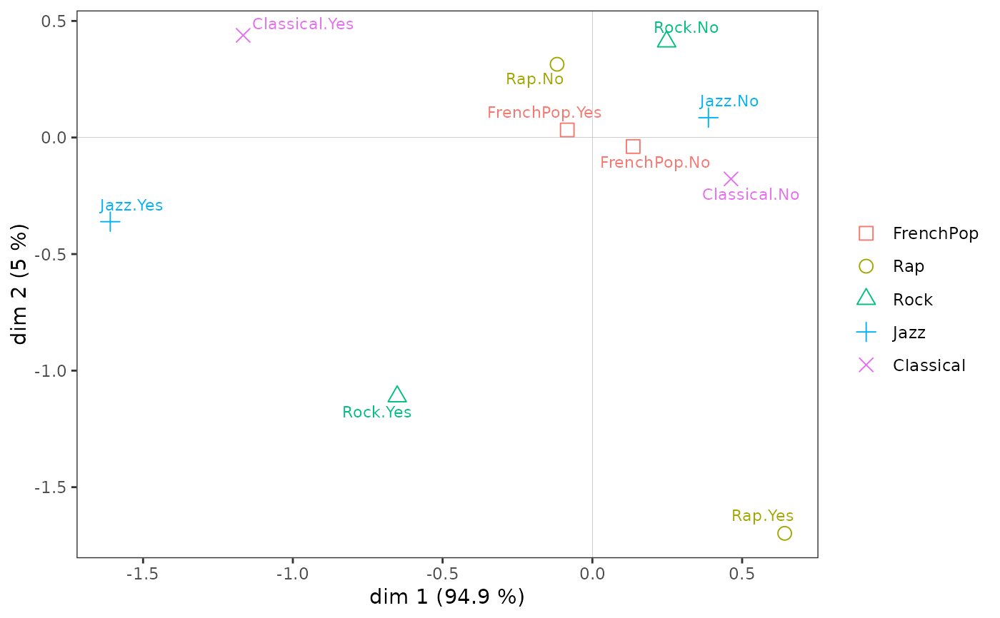
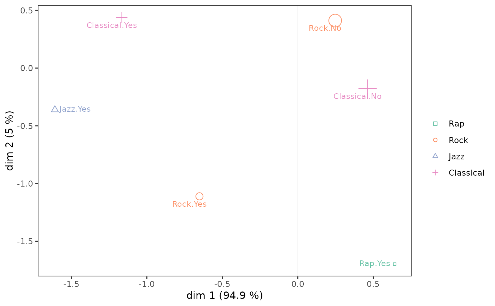

ggcloud_variables.RdPlots a Multiple Correspondence Analysis cloud of variables, using ggplots functions.
ggcloud_variables(resmca, axes=c(1,2), points='all', shapes=TRUE, prop=NULL, textsize=3, shapesize=3, col=NULL, palette=NULL, alpha=1, segment.alpha=0.5, vlab=TRUE, sep='.', legend='right')
| resmca | object of class |
|---|---|
| axes | numeric vector of length 2, specifying the components (axes) to plot. Default is c(1,2). |
| points | character string. If 'all' all categories are plotted (default); if 'besth' only those who contribute most to horizontal axis are plotted; if 'bestv' only those who contribute most to vertical axis are plotted; if 'best' only those who contribute most to horizontal or vertical axis are plotted. |
| shapes | Logical. Should shapes be plotted for categories (in addition to labels) ? Default is TRUE. |
| prop | If NULL, the size of the labels (if shapes=FALSE) or the shapes (if shapes=TRUE) is constant. If 'n', the size is proportional the the weights of categories; if 'ctr1', the size is proportional to the contributions of the categories on the first dimension of the plot; if 'ctr2', the size is proportional to the contributions of the categories on the second dimension of the plot; if 'ctr.cloud', the size is proportional to the total contributions of the categories on the whole cloud; if 'cos1', the size is proportional to the cosines of the categories on the first dimension of the plot; if 'cos2', the size is proportional to the cosines of the categories on the second dimension of the plot; if 'cos12', the size is proportional to the total cosines of the categories on the two dimensions of the plot. |
| textsize | Size of the labels of categories if shapes=TRUE, or if shapes=FALSE and prop=NULL. Default is 3. |
| shapesize | Size if the shapes of categories if shapes=TRUE and prop=FALSE. Default is 3. |
| col | Character. A unique color for the shapes and labels of the categories. Default is NULL, which means a palette will be used instead of a unique color (see |
| palette | Character string or character vector. Only used if |
| alpha | Transparency of the shapes and labels of categories. Default is 1. |
| segment.alpha | Transparency of the line segment beside labels of categories. Default is 0.5. |
| vlab | Logical. Should the variable names be used as a prefix for the labels of the categories. Default is TRUE. |
| sep | Character string used as a separator if vlab=TRUE. |
| legend | the position of legends ("none", "left", "right", "bottom", "top", or two-element numeric vector). Default is right. |
a ggplot object
Le Roux B. and Rouanet H., Multiple Correspondence Analysis, SAGE, Series: Quantitative Applications in the Social Sciences, Volume 163, CA:Thousand Oaks (2010).
Le Roux B. and Rouanet H., Geometric Data Analysis: From Correspondence Analysis to Stuctured Data Analysis, Kluwer Academic Publishers, Dordrecht (June 2004).
Anton Perdoncin, Nicolas Robette
## Performs a specific MCA on 'Music' example data set ## ignoring every 'NA' (i.e. 'not available') categories, ## and then draws the cloud of categories. data(Music) getindexcat(Music[,1:5])#> [1] "FrenchPop.No" "FrenchPop.Yes" "FrenchPop.NA" "Rap.No" #> [5] "Rap.Yes" "Rap.NA" "Rock.No" "Rock.Yes" #> [9] "Rock.NA" "Jazz.No" "Jazz.Yes" "Jazz.NA" #> [13] "Classical.No" "Classical.Yes" "Classical.NA"ggcloud_variables(mca, points='best', prop='n', palette='Set2')